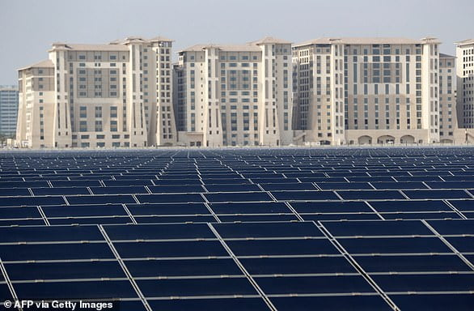
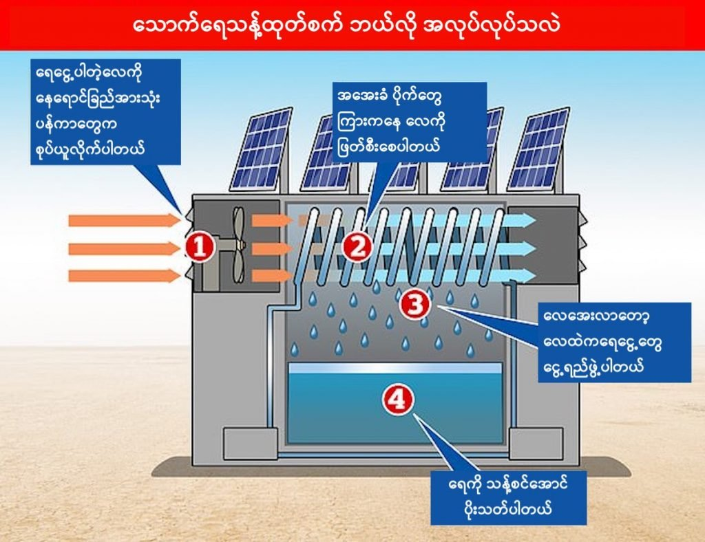

ခြောက်သွေ့တဲ့ ကန္တာရဒေသမှာ ရှိတဲ့ အာရပ်ဆော်ဘွားများ ပြည်ထောင်စု (ယူအေအီး) နိုင်ငံက ပညာရှင်တွေဟာ လေထဲကနေ သောက်ရေသန့်ထုတ်မယ့် စမ်းသပ် စီမံကိန်း တရပ်ကို အကောင်အထည်ဖော်ဖို့ ကြိုးစားနေ ကြပါတယ်။
ဒီအစီအစဉ်အရ အများပြည်သူ သောက်သုံးနိုင်ဖို့ သောက်ရေသန့်စက်တွေကို တပ်ဆင်ဖို့ပဲ ဖြစ်ပါတယ်။ ဒါပေမယ့် ထူးခြားတာကတော့ ဒီသောက်ရေသန့်စက်တွေဟာ လေထုထဲမှာ ရှိတဲ့ ရေငွေ့ကနေပြီး သောက်ရေသန့် ထုတ်ယူမယ့် စက်တွေ ဖြစ်ပါတယ်။
ဒီနည်းပညာအရ တပ်ဆင်မယ့် ရေသန့်စက်တွေဟာ ပတ်ဝန်းကျင် လေထုထဲမှာ ပျော်ဝင်နေတဲ့ ရေငွေ့တွေကို သောက်ရေအဖြစ် ပြောင်းပြီး လူအများ သောက်သုံးနိုင်တဲ့ ပမာဏ ထုတ်လုပ်နိုင်မှာ ဖြစ်ပါတယ်။ ပြီးတော့ ဒီစက်တွေဟာ တစ်ရက် ကို ၂၄ နာရီ မရပ်မနား သောက်ရေသန့် ထုတ်ပေးနိုင်မှာပါ။
ဒီလို လေထဲမှာ ရှိနေတဲ့ ရေငွေ့ကနေ သောက်ရေသန့် ပြောင်းတာက အထူးအဆန်းတော့ မဟုတ်ပါဘူး။ ဥပမာ အပြည်ပြည်ဆိုင်ရာ အာကာသ စခန်းပေါ်မှာ အာကာသ ယာဉ်မှူးတွေရဲ့ ချွေးကနေ ရေပြန်ထုတ်တဲ့ စက်တွေ တပ်ဆင်ထားပါတယ်။ ဒါပေမယ့် ဒါမျိုး လေထုထဲက ရေပြန်ထုတ်တဲ့ စက်မျိုးကို ကမ္ဘာမြေပေါ်မှာ တပ်ဆင် အသုံးပြုမှာက ဒါပထမဆုံး အကြိမ် ဖြစ်ပါတယ်။ အထူးသဖြင့် ဒီလို ရေဂါလန် အမြောက်အများ ထုတ်ပေးနိုင်မယ့် သောက်ရေသန့်စက်မျိုးကို အရင်က ထုတ်လုပ်တပ်ဆင်ခဲ့ဖူးခြင်း မရှိသေးပါဘူး။
ယခု စီမံကိန်းကို တာဝန်ယူ ဦးဆောင်မယ့် သူကတော့ အမေရိကန် ပြည်ထောင်စု အခြေစိုက် AQUOVUM နည်းပညာ ကုမ္ပဏီပဲ ဖြစ်ပါတယ်။ ဒီကုမ္ပဏီနဲ့ ပူးတွဲဖက်စပ်ပြီး စီမံကိန်း အကောင်အထည် ဖော်ဖို့ ယူအေအီးနိုင်ငံက မတ်စ်ဒါမြို့ (Masdar City) နဲ့ ကာလီဖာ သိပ္ပံနှင့် နည်းပညာ တက္ကသိုလ် (Khalifa University of Science and Technology) တို့က ဖက်စပ်ပါဝင်ကြမှာ ဖြစ်ပါတယ်။
ဒီနည်းပညာအရ သောက်ရေသန့် ထုတ်လုပ်ရာမှာ ကာဘွန်ဒိုင်အောက်ဆိုဒ် ထွက်ရှိမှု လုံးဝ မရှိအောင် စီမံထားပါတယ်။ ဆိုလိုတာက ဒီ သောက်ရေသန့်ထုတ်ဖို့ လိုအပ်တဲ့ လျှပ်စစ်စွမ်းအင်ကို လောင်စာ (သို့) ကျောက်မီးသွေး လောင်ကျွမ်းမှုကနေ ထုတ်ယူမှာ မဟုတ်ပဲ နေစွမ်းအင်ကနေ ထုတ်ယူဖို့ ဖြစ်ပါတယ်။
ဒီစီမံကိန်းကို ယခု အောက်တိုဘာလမှာ စတင်ပြီး စမ်းသပ်လည်ပတ်မှာ ဖြစ်ပါတယ်။ စမ်းသပ်မှု အောင်မြင်ရင် လေကထုတ်မယ့် သောက်ရေသန့် စက်တွေကို အဘူဒါဘီ လေဆိပ်နားမှာ တည်ဆောက်နေတဲ့ မတ်စ်ဒါမြို့သစ်မှာ အမြောက်အများ တပ်ဆင်သွားမယ်လို့ သိရပါတယ်။
ယူအေအီး နိုင်ငံရဲ့ ပျမ်းမျှ အပူချိန်ဟာ ၂၆ ဒီဂရီ စင်တီဂရိတ်ခန့်ရှိပြီး လေထုထဲ ရေငွေ့ပါဝင်နှုန်းကလဲ ၆၀% လောက်ထိ မြင့်မားပါတယ်။ ဒီလိုအခြေအနေမှာ ဒီ လေထဲက ရေသန့်ထုတ်စက် အလုံး ၂၀ တပ်ဆင်ထားရင် တစ်ရက်ကို သောက်ရေသန့် လစ်တာ ၆,၇၀၀ ထုတ်လုပ်နိုင်မှာ ဖြစ်ပါတယ်။ ဒါဟာ လူ ၃,၀၀၀ စာလောက်အတွက် သောက်ရေလိုအပ်ချက်ကို ဖြည့်ဆည်းပေးနိုင်မှာပါ။

ဒီ ဆိုလာပါဝါကို အသုံးချပြီး ထုတ်လုပ်ရရှိတဲ့ လျှပ်စစ်စွမ်းအင်ကို ဒီသောက်ရေသန့်စက်တွေ လည်ပတ်ဖို့လဲ အသုံးပြုမှာ ဖြစ်ပါတယ်။
ဒီရေသန့်စက်တွေ အလုပ်လုပ်ပုံကလဲ သဘောတရားက သိပ်မခက်ပါဘူး။ ပထမဆုံး ပတ်ဝန်းကျင်က ရေငွေ့ပါတဲ့ လေကို ပိုက်တွေနဲ့ စုပ်ယူလိုက်ပါတယ်။ ပြီးတော့ ဒီလေကို အအေးခံထားတဲ့ ပိုက်တွေကြားထဲ ဖြတ်စီးစေပါတယ်။ ဒီအခါ လေထဲပါတဲ့ ရေငွေ့တွေက ဒီအအေးခံပိုက်တွေပေါ်မှာ ငွေ့ရည်ဖွဲ့ပြီး ရေငွေ့အဖြစ် ပြန်ပြောင်းသွားပါတယ်။ ရေခဲထည့်ထားတဲ့ ဖန်ခွက်ရဲ့ အပြင်ဖက်မှာ ငွေ့ရည်ဖွဲ့ပြီး ရေတွေ စိုရွှဲလာသလိုပေါ့။

အကယ်လို့သာ စမ်းသပ်စီမံကိန်း အောင်မြင်ခဲ့ရင် ဒုတိယဆင့် စမ်းသပ်မှု အနေနဲ့ မတ်စ်ဒါမြို့မှာ တည်ဆောက်နေတဲ့ ကာလီဖါတက္ကသိုလ် ပရဝုဏ်ထဲမှာ တပ်ဆင်သွားမယ်လို့လဲ သိရပါတယ်။
Reference: World’s first solar-powered project to extract drinking water from thin air | Inceptive Mind